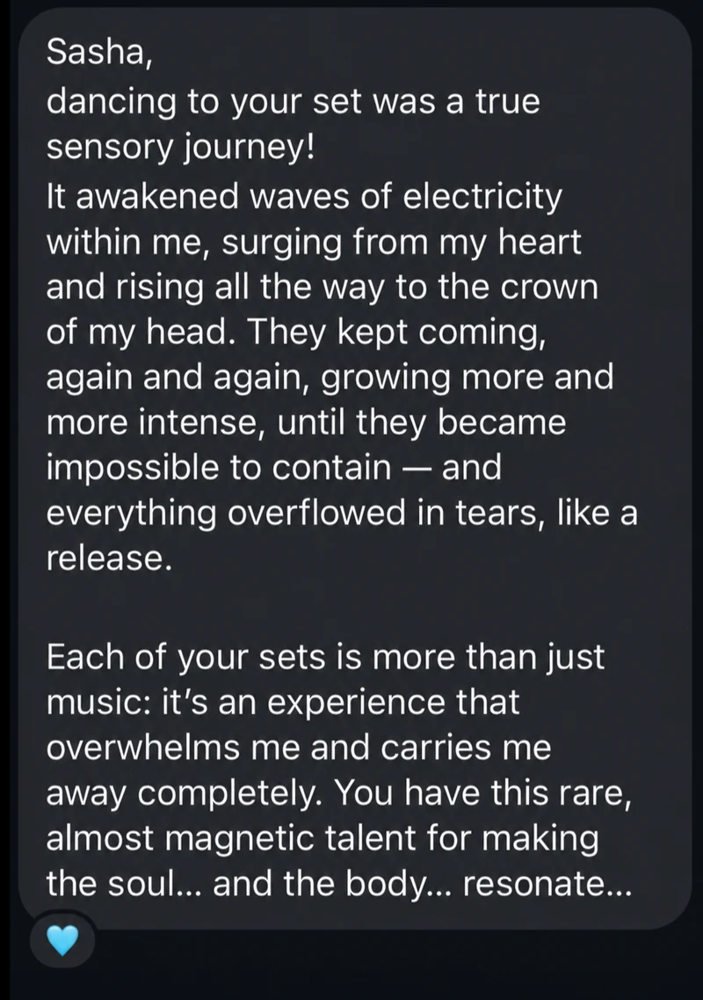
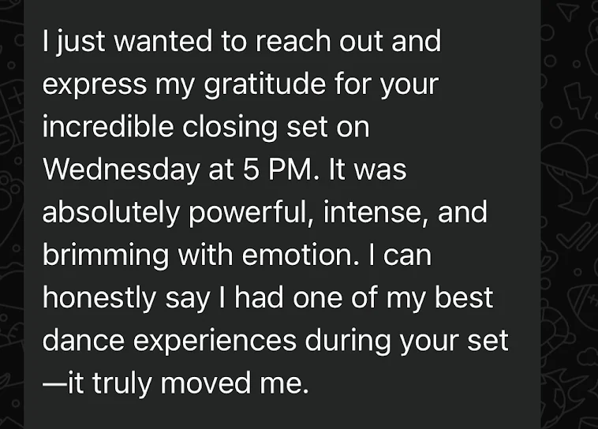
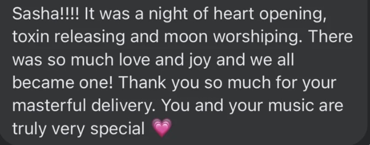

A Heartful Ecstatic Dance Ceremony
From tears to twerking.From stillness to wildness.From letting go to coming alive.Every emotion has a place on the dance floor.
Cacao, live music, free movement and gentle somatic release. Space for every part of you.
With Sasha X + guest musicians & facilitators
When
Saturday, November 14, 2026
10:45 a.m. to 1 p.m.-ish · Bali time
Wear
White · beige · off-white
The meaning of SAMA
An invitation to listen deeply inside.
SAMA takes its name from samāʿ, meaning “listening” or “hearing.” In Sufism, it refers to spiritual listening to music and poetry—a way of opening the heart. Inspired by that spirit, this ceremony invites us to listen deeply inside ourselves.
Through music, dance and movement, we notice sensations, meet different parts of ourselves and make room for feelings we may rarely reach. From tenderness and tears to joy and play, each feeling offers a chance to know ourselves more deeply.
Every part of you is welcome.
- tenderness
- joy
- freedom
- play
- vulnerability
- longing
More space within. More of yourself.
Music can bring hidden feelings closer; movement gives them a way to be expressed. Sasha’s background in Internal Family Systems (IFS) shapes a space of curiosity, acceptance and care for every part of us.
Small, gentle invitations to notice, breathe and move support somatic release—giving feelings room to move through the body. They can help you connect more deeply, soften what you’re carrying and open to a more transformative experience. Follow at your own pace; moving, pausing and resting all belong.
The journey
Arrive. Land. Expand. Integrate.
Settle into the circle. Feel your way outward. Return with time to take it all in.
-
01 · Connect
Arrive
Arrive with cacao, live music and time to connect. Together, we set an intention and notice what we’re bringing into the room.
-
02 · Ground
Land
Land in the body through grounding meditation and gentle movement.
-
03 · Expand
Expand
Expand through the DJ journey, with live instruments and subtle guidance.
-
04 · Integrate
Integrate
Integrate with a closing meditation, rest and reflection.
Live music woven throughout


Your facilitator
Hi, I’m Sasha.
DJ · live musician · Internal Family Systems (IFS) therapist
Music has been part of my life since my first guitar at thirteen. College parties brought me to DJing; over time, live instruments and dance became different ways of exploring the same thing: what it feels like to be human.
Today, my sets bring together guitar, flute, singing, vocal effects and DJing. Live sounds respond to the people in the room, carrying the journey from quiet and tender to playful and expansive, and back again.
My work with IFS (Internal Family Systems) shapes the way I facilitate—with curiosity and care, and a belief that the parts of ourselves we find hardest to welcome deserve space, too.
Joined by guest musicians & facilitators. Guest details to be announced.
A world of rhythms · A full range of feeling
Multi-genre. Many ways to feel.
From classical piano to dancehall, EDM, funk, reggaeton, Afro rhythms and sounds from around the world, the music follows the emotional journey. Each change of rhythm opens another possibility: playfulness, tenderness, sensuality, joy or release.
Just a few of the sounds that may come through
- classical piano
- dancehall
- EDM
- funk
- reggaeton
- Afro
- ambient
- disco
- hip hop
- Latin
- soul
- techno
- cumbia
- Balkan
- downtempo
- trance
- jazz
- Middle Eastern
- and more…
Musicians in the room · Music in the moment
Live music. Shared energy.
The breath of a flute, the warmth of a voice, the energy of strings: live music brings a human presence to the room. Musicians respond to the dancers, letting the sound soften, deepen or become more playful as the journey unfolds.


Past collaborations with saxophone, violin and voice.

Words from the dance floor
“It awakened waves of electricity within me, surging from my heart and rising all the way to the crown of my head.”
A dancer’s reflection after a journey with Sasha



Come into the circle
A few things before we dance.
Come with a little curiosity. Please wear white, beige or off-white. Choose clothes that let you move comfortably.
Do I need to know how to dance?
No experience needed. Let movement arise from within you; small movements and stillness are welcome, too.
What will the ceremony include?
Cacao, intention setting, grounding meditation, a DJ journey with live instruments and gentle somatic release guidance, then rest and integration.
How much guidance will there be?
Occasional, subtle invitations to notice sensations, explore movement and allow emotional release through the body. You choose what to follow and when to pause.
What’s the dress theme?
Please wear white, beige or off-white clothes that let you move and rest comfortably.
When, where, and how do I book?
Saturday, November 14, 2026, 10:45 a.m. to 1 p.m.-ish Bali time, at InMovement in Ubud ↗. View the tiers on the SAMA ticket page.

Leave with a little less to carry. A little more of you.
That’s the hope. A deeper connection, a feeling welcomed, a little more kindness toward yourself.
November 14 · 10:45 a.m. to 1 p.m.-ish Bali time · InMovement, Ubud ↗
Limited capacity